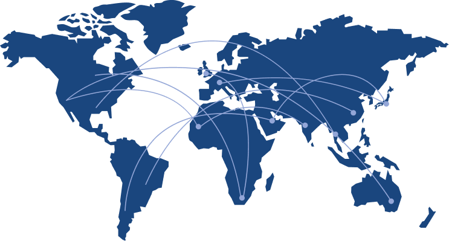

<style>
 img.partner {max-width:100%; height: auto}
</style>
<!-- Slider Start -->
<section id="slider">
  <div class="container">
    <div class="row">
	  <div class="col-md-10 col-md-offset-2">
        <div class="block">
		  <p class="animated fadeInUp">“Openness, trustlessness and strong governance are the foundations that will enable digital assets to flourish in today’s highly complex and regulated financial world. We’re making this vision a reality by partnering with leading players from across the industry.”</p>
		  <br/>
		  <p class="animated fadeInUp">Hugh Madden, Co-Founder OAX Foundation</p>
        </div>
	  </div>
    </div>
</section>
<!-- Wrapper Start -->
<section id="intro">
  <div class="container">
    <div class="row">
      <div class="col-md-5 col-sm-12">
        <div class="block">
          <!-- <div class="section-title"> -->
          <h2 class="section-title-left">Our Mission</h2><br>
          <p>OAX Foundation was created to explore the future of decentralized exchanges and address their four main shortcomings: speed, scalability, interoperability and trust. </p>
          <p>Digital asset trading is currently dominated by centralized exchanges, which are both counter-intuitive to the nature of blockchain and vulnerable to hacking. </p>
          <p>Existing decentralized exchanges on the other hand, while tailored to the proposition of digital assets, have performance issues deep rooted in their technology. </p>
          <p>OAX Foundation's mission is to tackle these issues and in so doing help bring decentralization to the mainstream.</p>
          <p><br><a href="/blog/" class="oax-learn-more-button">Learn More</a></p>
        </div>
      </div><!-- .col-md-7 close -->
      <div class="col-md-7 col-sm-12">
        <br/>
        <br/>
        <br/>
        <!-- <div class="block"> -->
          
        <!-- </div> -->
      </div><!-- .col-md-5 close -->
    </div>
  </div>
</section>

<!-- Timeline Title Start -->
<section id="timeline-title">
  <div class="container">
    <div class="row">
      <div class="col-md-12">
        <h2>Timeline</h2>
        <p>Scroll to view our journey</p>
      </div>
    </div>
  </div>
</section>


<!-- Timeline Start -->
<section id="homepage-timeline">
  <div class="container">
    <div class="row">
      <div class="col-md-12">
          <div class="horizontal-timeline" id="home-timeline">
              <div class="events-content">
                <ol>

                  <!-- Miletone entry -->
                  <li data-date="1/06/2017" data-custom-display="Jun<br>2017">
                    <div class="container milestone-container">
                        <div class="row">
                          <div class="col-md-7">                            
                              <h3 class="milestone-title tech">June 2017 - Whitepaper</h3>
                              <span class="milestone-category tech">Tech Milestone</span>
                              <div class="milestone-content">
                                  <p>Where it all began. The idea, the thoughts and the initial proposed solution that started the journey of OAX Foundation.</p>
                              </div>
                          </div>
                          <div class="col-md-5">
                              <div class="milestone-big-icon"></div>
                          </div>
                        </div>
                    </div>
                  </li>

                  <!-- Miletone entry -->
                  <li data-date="23/05/2015" data-custom-display="Step 1">
                    <div class="container">
                        <div class="row">
                          <div class="col-md-6" style="background: red;">
                              hello
                          </div>
                          <div class="col-md-6" style="background: blue;">
                              hihi
                          </div>
                        </div>
                    </div>
                  </li>

                 
                </ol>
              </div>
          </div>
      </div>
    </div>
  </div>
</section>


